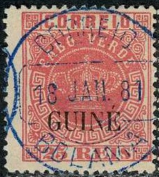

Return To Catalogue - Portugal
Note: on my website many of the
pictures can not be seen! They are of course present in the
catalogue;
contact me if you want to purchase the catalogue.
5 r black (overprint in red (large) or black (small)) 10 r yellow 10 r green (only large overprint) 20 r brown 20 r red (only large overprint) 25 r red 25 r lilac (only large overprint) 40 r blue 40 r yellow (only large overprint) 50 r green 50 r blue (only large overprint) 100 r lilac 200 r orange 300 r brown
For the specialist, the overprint exists in two sizes. There exist errors of the 40 r stamps, the stamps of Mozambique were used instead of the stamps of Cape Verde. This error exists for the 40 r blue with large and small overprint and for the 40 r yellow (large overprint). Stamps in similar designs were issued for most Portuguese colonies (country name different for each country), click here for more information on this issue. I've seen the large 'GUINE' overprint with and without accent above the 'E' (also with smaller accent). The smallest overprint only exists with perforation 12 1/2 and was printed in the colony itself. The largest overprint exists with perforation 12 1/2 and 13 1/2.
Value of the stamps |
|||
vc = very common c = common * = not so common ** = uncommon |
*** = very uncommon R = rare RR = very rare RRR = extremely rare |
||
| Value | Unused | Used | Remarks |
| With small 'GUINE' overprint (provisional local issue) | |||
| 5 r | RRR | RRR | Black overprint |
| 10 r yellow | RRR | RRR | |
| 20 r brown | RR | RR | |
| 25 r red | RRR | RRR | |
| 40 r blue | RRR | RRR | Error 'Mozambique': RRR |
| 50 r green | RRR | RRR | |
| 100 r | RR | RR | |
| 200 r | RRR | RRR | |
| 300 r | RRR | RRR | |
| With large 'GUINE'
overprint (with or without accent on 'E') |
|||
| 5 r black | *** | *** | Red overprint |
| 10 r yellow | RR | RR | |
| 10 r green | *** | *** | |
| 20 r brown | ** | ** | |
| 20 r red | *** | *** | |
| 25 r red | ** | ** | |
| 25 r lilac | ** | ** | |
| 40 r blue | RR | RR | |
| 40 r yellow | * | * | Error: 'Mozambique': RR |
| 50 r green | RR | RR | |
| 50 r blue | ** | ** | |
| 100 r | *** | *** | |
| 200 r | *** | *** | |
| 300 r | *** | *** | |
I have seen reprints of all large overprints. If I am well informed, the paper is whiter in these reprints. They were made in 1885 and in 1905.
Fournier forgeries:


(Fournier forgeries, small and large overprints)
Forged 'GUINE' overprints as found in the 'Fournier Album'
(reduced sizes)

(forged large and small Fournier 'GUINE' overprint)
Fournier used forged stamps of Macao with forged overprints. Click here for more information on how to detect the forgeries. The cancel used for Fournier forgeries 'CORREIO 13 NOV. 84 BOLAMA':


Forged Fournier cancel, taken from a Fournier album. Next to it a
forged 40 r stamp with this cancel, offered as genuine on a
prestigous Internet auction. I've also seen this cancel in the
colour blue.

The forged cancel "CORREIO DE BISSAU 7 12 1881" can be
found in the Fournier Album. It was probably also used on
Fournier forgeries. Here with a forged cancel from Spanish
Morocco and one from Timor.
Fournier offers these the 5 r black, 10 r yellow, 20 r brown, 25 r red, 40 r blue, 50 r green, 100 r lilac, 200 r orange and 300 r brown (9 values) with the large overprint for 3 Swiss Francs in his 1914 pricelist. He offers the same values with the small overprint for the same price. The misprints 40 r blue (on Mozambique) with small or large overprint were offered for 2.50 Swiss Francs each. The other values (5 values) with 10 r green, 20 r red, 25 r lilac, 40 r yellow and 50 r blue, all with the large overprint are offered for 1 Swiss Franc.

(This Fournier forgery has a inverted overprint)
More information concerning Fournier forgeries of this country can be found at: http://www.tabacaria.org/Selos/Coroa/CVFournier.htm.
Brasilian forgeries:
Some so-called Brazilian forgeries also exist, they have a dot at the right hand side of the "E" of "CORREIO". More images can be found at: http://www.tabacaria.org/Selos/Coroa/Acentocrown.htm.
I know that the above overprints are forged. I suspect that the stamps themselves are these so-called Brazilian forgeries. These forgeries have a bars and "G" cancel which was often used by the forger Oneglia.
By the way, a different forgery type is listed as Oneglia forgery in the book 'Forgeries of Portugal and Colonies by D.J. Davies, 2002', Published by the Portuguese Philatelic Society: there a forgery Type 2 is said to be an Oneglia forgery. Yet it does not have an Oneglia cancel, while a forgery Type 5 actually appears to resemble the above forgeries. The fact that the bars with "1" cancel appears on the Cabo Verde forgeries and the bars with "G" on the Portugues Guinea ones appears proof enough to me that these are actually Oneglia forgeries.
Copied from 'Forgeries of Portugal and Colonies by D.J. Davies,
2002'. Forgery Type 5 here appears to have a bars with
"1" cancel.

 :
:
These forgeries without overprint, here with a bars and
"1" cancel as often used by Oneglia.

5 r black 10 r green 20 r red 25 r lilac 40 r brown 50 r blue 80 r grey 100 r brown 200 r lilac 300 r orange
Reprints exist of these stamps (made in 1905).
Value of the stamps |
|||
vc = very common c = common * = not so common ** = uncommon |
*** = very uncommon R = rare RR = very rare RRR = extremely rare |
||
| Value | Unused | Used | Remarks |
| 5 r | * | * | |
| 10 r | ** | ** | |
| 20 r | *** | *** | |
| 25 r | *** | *** | |
| 40 r | *** | *** | |
| 50 r | *** | *** | |
| 80 r | *** | *** | |
| 100 r | *** | *** | |
| 200 r | R | R | |
| 300 r | R | R | |
Surcharged in fancy letters (1902)
'65 REIS' on 10 r green '65 REIS' on 20 r red '65 REIS' on 25 r lilac '115 REIS' on 40 r brown '115 REIS' on 50 r blue '115 REIS' on 300 r orange '130 REIS' on 80 r grey '130 REIS' on 100 r brown '400 REIS' (in red) on 5 r black '400 REIS' on 200 r grey
Value of the stamps |
|||
vc = very common c = common * = not so common ** = uncommon |
*** = very uncommon R = rare RR = very rare RRR = extremely rare |
||
| Value | Unused | Used | Remarks |
| 65 r on 10 r | *** | *** | |
| 65 r on 20 r | *** | *** | |
| 65 r on 25 r | *** | *** | |
| 115 r on 40 r | *** | *** | |
| 115 r on 50 r | *** | *** | |
| 115 r on 300 r | *** | *** | |
| 130 r on 80 r | *** | *** | |
| 130 r on 100 r | *** | *** | |
| 400 r on 5 r | R | R | |
| 400 r on 200 r | R | R | |
Surcharged in fancy letters and overprinted 'REPUBLICA' in red (1915)
(Sorry, no picture available yet, if anybody posesses a picture, please contact me!)
'115 REIS' on 40 r brown '115 REIS' on 50 r blue '130 REIS' on 80 r grey '130 REIS' on 100 r brown
Value of the stamps |
|||
vc = very common c = common * = not so common ** = uncommon |
*** = very uncommon R = rare RR = very rare RRR = extremely rare |
||
| Value | Unused | Used | Remarks |
| 115 r on 40 r | * | * | |
| 115 r on 50 r | * | * | |
| 130 r on 80 r | ** | ** | |
| 130 r on 100 r | ** | ** | |

2 1/2 r brown
Newspaper stamps in this design were issued for most Portuguese colonies (country name different for each country), click here for more information.
Value of the stamps |
|||
vc = very common c = common * = not so common ** = uncommon |
*** = very uncommon R = rare RR = very rare RRR = extremely rare |
||
| Value | Unused | Used | Remarks |
| 2 1/2 r | * | * | |
Surcharged in fancy letters (1902)
(Sorry, no picture available yet, if anybody posesses a picture, please contact me!)
'115 REIS' on 2 1/2 r brown
Value of the stamps |
|||
vc = very common c = common * = not so common ** = uncommon |
*** = very uncommon R = rare RR = very rare RRR = extremely rare |
||
| Value | Unused | Used | Remarks |
| 115 r on 2 1/2 r | *** | *** | |
Surcharged in fancy letters and overprinted "REPUBLICA" in red (1915)

'115 REIS' on 2 1/2 r brown
Value of the stamps |
|||
vc = very common c = common * = not so common ** = uncommon |
*** = very uncommon R = rare RR = very rare RRR = extremely rare |
||
| Value | Unused | Used | Remarks |
| 115 r on 2 1/2 r | ** | ** | "REPUBLICA" reading downwards |
5 r yellow 10 r lilac 15 r brown 20 r blue 25 r green 50 r blue 75 r red 80 r green 100 r brown 150 r red on red 200 r blue on blue 300 r blue on red
Stamps in similar designs were issued for most Portuguese colonies (country name different for each country), click here for more information on this issue.
Value of the stamps |
|||
vc = very common c = common * = not so common ** = uncommon |
*** = very uncommon R = rare RR = very rare RRR = extremely rare |
||
| Value | Unused | Used | Remarks |
| 5 r | * | * | |
| 10 r | ** | ** | |
| 15 r | *** | *** | |
| 20 r | *** | *** | |
| 25 r | ** | ** | |
| 50 r | *** | *** | |
| 75 r | *** | *** | |
| 80 r | *** | *** | |
| 100 r | *** | *** | |
| 150 r | R | R | |
| 200 r | R | R | |
| 300 r | R | R | |
Surcharged in fancy letters (1902)

Click here for stamps of other colonies with similar surcharges.
'65 REIS' on 10 r lilac '65 REIS' on 15 r brown '65 REIS' on 20 r blue '65 REIS' on 50 r blue '115 REIS' on 5 r yellow '115 REIS' on 25 r green '130 REIS' on 150 r red on red '130 REIS' on 200 r blue on blue '130 REIS' on 300 r blue on red '400 REIS' on 75 r red '400 REIS' on 80 r green '400 REIS' on 100 r brown
Value of the stamps |
|||
vc = very common c = common * = not so common ** = uncommon |
*** = very uncommon R = rare RR = very rare RRR = extremely rare |
||
| Value | Unused | Used | Remarks |
| 65 r on 10 r | *** | *** | |
| 65 r on 15 r | *** | *** | |
| 65 r on 20 r | *** | *** | |
| 65 r on 50 r | *** | *** | |
| 115 r on 5 r | *** | *** | |
| 115 r on 25 r | *** | *** | |
| 130 r on 150 r | *** | *** | |
| 130 r on 200 r | *** | *** | |
| 130 r on 300 r | *** | *** | |
| 400 r on 75 r | ** | ** | |
| 400 r on 80 r | ** | ** | |
| 400 r on 100 r | ** | ** | |
Surcharged in fancy letters and overprinted "REPUBLICA" in red (1915)

Click here for stamps of other colonies
with similar surcharges.)
'115 REIS' on 5 r yellow '115 REIS' on 25 r green '130 REIS' on 150 r red on red '130 REIS' on 200 r blue on blue '130 REIS' on 300 r blue on red
Value of the stamps |
|||
vc = very common c = common * = not so common ** = uncommon |
*** = very uncommon R = rare RR = very rare RRR = extremely rare |
||
| Value | Unused | Used | Remarks |
| 115 r on 5 r | * | * | |
| 115 r on 25 r | ** | ** | |
| 130 r on 150 r | * | * | |
| 130 r on 200 r | * | * | |
| 130 r on 300 r | * | * | |
Surcharged in fancy letters and overprinted "Republica" in black and further surcharged (1925)

'Republica 40 c.' and bars on '400 REIS' on 75 r red 'Republica 40 c.' and bars on '400 REIS' on 80 r green 'Republica 40 c.' and bars on '400 REIS' on 100 r brown
Value of the stamps |
|||
vc = very common c = common * = not so common ** = uncommon |
*** = very uncommon R = rare RR = very rare RRR = extremely rare |
||
| Value | Unused | Used | Remarks |
| 40 c on 400 r on 75 r | * | * | |
| 40 c on 400 r on 80 r | * | * | |
| 40 c on 400 r on 100 r | * | * | |
I've seen these stamps with black or blue town and date cancels.

2 1/2 r grey 5 r orange 10 r green 15 r brown 15 r green (1903) 20 r lilac 25 r green 25 r red (1903) 50 r blue 50 r brown (1903) 65 r blue (1903) 75 r red 75 r lilac (1903) 80 r lilac 100 r blue on blue 115 r brown on red (1903) 130 r brown on yellow (1903) 150 r brown on yellow 200 r lilac 300 r blue on red 400 r blue on yellow (1903) 500 r black on blue (value in red) 700 r lilac on yellow
Stamps in similar designs were issued for most Portuguese colonies (country name different for each country), click here for more information on this issue.
Value of the stamps |
|||
vc = very common c = common * = not so common ** = uncommon |
*** = very uncommon R = rare RR = very rare RRR = extremely rare |
||
| Value | Unused | Used | Remarks |
| 2 1/2 r | * | * | |
| 5 r | * | * | |
| 10 r | * | * | |
| 15 r brown | ** | ** | |
| 15 r green | * | * | |
| 20 r | * | * | |
| 25 r green | *** | ** | |
| 25 r red | * | * | |
| 50 r blue | *** | ** | |
| 50 r brown | *** | *** | |
| 65 r | *** | *** | |
| 75 r red | *** | *** | |
| 75 r lilac | *** | *** | |
| 80 r | *** | *** | |
| 100 r | ** | ** | |
| 115 r | *** | *** | |
| 130 r | *** | *** | |
| 150 r | *** | *** | |
| 200 r | *** | *** | |
| 300 r | *** | *** | |
| 400 r | *** | *** | |
| 500 r | *** | *** | |
| 700 r | R | R | |
Surcharged

'50 REIS' on 65 r blue (1905)
Value of the stamps |
|||
vc = very common c = common * = not so common ** = uncommon |
*** = very uncommon R = rare RR = very rare RRR = extremely rare |
||
| Value | Unused | Used | Remarks |
| 50 r on 65 r | ** | ** | |
Surcharged and overprinted "REPUBLICA" in red
'50 REIS' on 65 r blue (1915)
Value of the stamps |
|||
vc = very common c = common * = not so common ** = uncommon |
*** = very uncommon R = rare RR = very rare RRR = extremely rare |
||
| Value | Unused | Used | Remarks |
| 50 r on 65 r | * | * | |
Overprinted "PROVISORIO" in fancy letters (1902)

15 r brown 25 r green 50 r blue 75 r red
Value of the stamps |
|||
vc = very common c = common * = not so common ** = uncommon |
*** = very uncommon R = rare RR = very rare RRR = extremely rare |
||
| Value | Unused | Used | Remarks |
| 15 r | * | * | |
| 25 r | ** | * | |
| 50 r | ** | ** | |
| 75 r | *** | *** | |
Overprinted "REPUBLICA" in red except otherwise stated
2 1/2 r grey 5 r orange 10 r green 15 r green 20 r lilac 25 r red (overprint green) 50 r brown 75 r lilac 100 r blue on blue 115 r brown on red 130 r brown on yellow 200 r lilac 400 r blue on yellow (overprint in red or black) 500 r black on blue 700 r lilac on yellow (overprint in red or black)
Value of the stamps |
|||
vc = very common c = common * = not so common ** = uncommon |
*** = very uncommon R = rare RR = very rare RRR = extremely rare |
||
| Value | Unused | Used | Remarks |
With diagonal local thin red 'REPUBLICA' overprint (1913) |
|||
| 15 r | *** | *** | |
| 75 r | *** | *** | |
| 100 r | ** | ** | |
| 200 r | R | R | |
| With diagonal
general broad 'REPUBLICA' overprint (1911) in red (except for the 25 r in green) |
|||
| 2 1/2 r | * | * | |
| 5 r | * | * | |
| 10 r | * | * | |
| 15 r | * | * | |
| 20 r | * | * | |
| 25 r | * | * | Overprint green |
| 50 r | c | c | |
| 75 r | c | * | |
| 100 r | * | * | |
| 115 r | c | * | |
| 130 r | c | * | |
| 200 r | ** | ** | |
| 400 r | * | * | |
| 500 r | ** | ** | |
| 700 r | ** | ** | |
| With horizontal black 'REPUBLICA' overprint (1919) | |||
| 400 r | R | R | |
| 700 r | *** | *** | |
Overprinted "PROVISORIO" in fancy letters and "REPUBLICA" in red
(General broad "REPUBLICA" overprint)
15 r brown (1914) 50 r brown (1915) 75 r red (1914)
Value of the stamps |
|||
vc = very common c = common * = not so common ** = uncommon |
*** = very uncommon R = rare RR = very rare RRR = extremely rare |
||
| Value | Unused | Used | Remarks |
With local thin 'REPUBLICA' overprint (1913) |
|||
| 15 r | *** | *** | |
| 75 r | *** | *** | |
| With general broad 'REPUBLICA' overprint (1915) | |||
| 15 r | * | * | |
| 50 r | * | * | |
Overprinted "REPUBLICA" and surcharged (1920)
(Variety, '1' and 'T' missing)
'$12 CENTAVOS' on 115 r brown on red
Value of the stamps |
|||
vc = very common c = common * = not so common ** = uncommon |
*** = very uncommon R = rare RR = very rare RRR = extremely rare |
||
| Value | Unused | Used | Remarks |
| 12 c on 115 r | *** | *** | |
Click here for pictures of similar surcharges on other Portuguese colonies
1)on Portuguese Africa

1/4 c on 2 1/2 r green 1/2 c on 5 r red 1 c on 10 r lilac 2 1/2 c on 25 r green 5 c on 50 r blue 7 1/2 c on 75 r brown 10 c on 100 r brown 15 c on 150 r brown
Value of the stamps |
|||
vc = very common c = common * = not so common ** = uncommon |
*** = very uncommon R = rare RR = very rare RRR = extremely rare |
||
| Value | Unused | Used | Remarks |
| 1/4 c on 2 1/2 r | * | * | |
| 1/2 c on 5 r | * | * | |
| 1 c on 10 r | * | * | |
| 2 1/2 c on 25 r | * | * | |
| 5 c on 50 r | * | * | |
| 7 1/2 c on 75 r | * | * | |
| 10 c on 100 r | * | * | |
| 15 c on 150 r | * | * | |
2)On Macao 1/4 c on 1/2 a green 1/2 c on 1 a red 1 c on 2 a lilac 2 1/2 c on 4 a green 5 c on 8 a blue 7 1/2 c on 12 a brown 10 c on 16 a brown 15 c on 24 a brown
Value of the stamps |
|||
vc = very common c = common * = not so common ** = uncommon |
*** = very uncommon R = rare RR = very rare RRR = extremely rare |
||
| Value | Unused | Used | Remarks |
| 1/4 c on 1/2 a | ** | ** | |
| 1/2 c on 1 a | ** | ** | |
| 1 c on 2 a | ** | ** | |
| 2 1/2 c on 4 a | * | * | |
| 5 c on 8 a | * | * | |
| 7 1/2 c on 12 a | * | * | |
| 10 c on 16 a | * | * | |
| 15 c on 24 a | * | * | |
3)On Timor 1/4 c on 1/2 a green 1/2 c on 1 a red 1 c on 2 a lilac 2 1/2 c on 4 a green 5 c on 8 a blue 7 1/2 c on 12 a brown 10 c on 16 a brown 15 c on 24 a brown
Value of the stamps |
|||
vc = very common c = common * = not so common ** = uncommon |
*** = very uncommon R = rare RR = very rare RRR = extremely rare |
||
| Value | Unused | Used | Remarks |
| 1/4 c on 1/2 a | ** | ** | |
| 1/2 c on 1 a | ** | ** | |
| 1 c on 2 a | ** | ** | |
| 2 1/2 c on 4 a | * | * | |
| 5 c on 8 a | * | * | |
| 7 1/2 c on 12 a | * | * | |
| 10 c on 16 a | * | * | |
| 15 c on 24 a | * | * | |

1/4 c olive 1/2 c black 1 c green 1 1/2 c brown 2 c red 2 c grey 2 1/2 c lilac 3 c orange 4 c red 4 1/2 c grey 5 c blue 6 c lilac 7 c blue 7 1/2 c brown 8 c violet 10 c brown 12 c green 15 c lilac 15 c red 20 c green 24 c blue 25 c brown 30 c brown on green 30 c green 40 c brown on red 40 c blue 50 c orange on red 50 c violet 60 c blue 60 c red 80 c red 1 E green on blue 1 E blue 1 E red 2 E violet 5 E yellow 10 E red 20 E green
Value of the stamps |
|||
vc = very common c = common * = not so common ** = uncommon |
*** = very uncommon R = rare RR = very rare RRR = extremely rare |
||
| Value | Unused | Used | Remarks |
| 1/4 c | vc | c | |
| 1/2 c | vc | c | |
| 1 c | vc | c | Two shades of green were issued |
| 1 1/2 c | c | c | |
| 2 c red | c | c | |
| 2 c grey | vc | c | |
| 2 1/2 c | vc | c | |
| 3 c | vc | c | |
| 4 c | c | c | |
| 4 1/2 c | c | c | |
| 5 c | c | c | Two shades of blue were issued |
| 6 c | c | c | |
| 7 c | c | c | |
| 7 1/2 c | c | c | |
| 8 c | c | c | |
| 10 c | c | c | |
| 12 c | c | c | |
| 15 c lilac | *** | *** | |
| 15 c red | c | c | |
| 20 c | c | c | |
| 24 c | c | c | |
| 25 c | c | c | |
| 30 c brown on green | *** | *** | |
| 30 c green | c | c | |
| 40 c brown on red | ** | ** | |
| 40 c blue | * | c | |
| 50 c orange on red | * | * | |
| 50 c violet | * | c | |
| 60 c blue | * | * | |
| 60 c red | * | * | |
| 80 c | * | * | |
| 1 E green on blue | ** | ** | |
| 1 E blue | * | * | |
| 1 E red | * | * | |
| 2 E | * | * | |
| 5 E | ** | ** | |
| 10 E | *** | *** | |
| 20 E | *** | *** | |
Surcharged
'$04 centavos' on 1/4 c green (1920) '$06 centavos' on 1/2 c black (1920) '50 c.' and bars on 60 c red (1931) '70 c.' and bars on 80 c red (1931) '1$40 E.' and bars on 2 E violet (1931)
Value of the stamps |
|||
vc = very common c = common * = not so common ** = uncommon |
*** = very uncommon R = rare RR = very rare RRR = extremely rare |
||
| Value | Unused | Used | Remarks |
| 4 c on 1/4 c | *** | *** | |
| 6 c on 1/2 c | *** | *** | |
(No picture available yet, if anybody posesses a picture, please contact me!)
$05 on 60 r yellow and black 10 r yellow and black 40 r yellow and black 50 r yellow and black
Value of the stamps |
|||
vc = very common c = common * = not so common ** = uncommon |
*** = very uncommon R = rare RR = very rare RRR = extremely rare |
||
| Value | Unused | Used | Remarks |
| $05 on 60 r | RR | RR | |
| 10 r | R | R | |
| 40 r | R | R | |
| 50 r | R | R | |
1 c light brown 5 c dark brown 10 c lilac 15 c black 20 c grey 30 c green 40 c orange 45 c light blue 50 c brown 60 c green 70 c light brown 80 c green 85 c red 1 E lilac 1.40 E blue 2 E violet 5 E green 10 E brown 20 E orange
Value in 'REIS' 5 r green 10 r black 20 r brown 30 r orange 50 r brown 60 r brown 100 r lilac 130 r blue 200 r red 500 r violet
Value of the stamps |
|||
vc = very common c = common * = not so common ** = uncommon |
*** = very uncommon R = rare RR = very rare RRR = extremely rare |
||
| Value | Unused | Used | Remarks |
| 5 r to 30 r | * | * | |
| 50 r | ** | ** | |
| 60 r | *** | *** | |
| 100 r | *** | *** | |
| 130 r | *** | *** | |
| 200 r | *** | *** | |
| 500 r | R | R | |
Overprinted "REPUBLICA" in red or green (200 r) (1911) 5 r green 10 r black 20 r brown 30 r orange 50 r brown 60 r brown 100 r lilac 130 r blue 200 r red 500 r violet
Value of the stamps |
|||
vc = very common c = common * = not so common ** = uncommon |
*** = very uncommon R = rare RR = very rare RRR = extremely rare |
||
| Value | Unused | Used | Remarks |
| 5 r | * | * | |
| 10 r | * | * | |
| 20 r | * | * | |
| 30 r | * | * | |
| 50 r | * | * | |
| 60 r | * | * | |
| 100 r | ** | ** | |
| 130 r | * | * | |
| 200 r | ** | ** | |
| 500 r | ** | ** | |
Overprinted "REPUBLICA" straight (1919) 10 r black 20 r brown 30 r orange 50 r brown 100 r lilac 130 r blue 200 r red 500 r violet
Value of the stamps |
|||
vc = very common c = common * = not so common ** = uncommon |
*** = very uncommon R = rare RR = very rare RRR = extremely rare |
||
| Value | Unused | Used | Remarks |
| 10 r | *** | *** | |
| 20 r | *** | *** | |
| 30 r | *** | *** | |
| 50 r | RR | RR | |
| 100 r | ** | ** | |
| 130 r | R | R | |
| 200 r | ** | ** | |
| 500 r | R | R | |
Value in cents (1921)
1/2 c green 1 c grey 2 c brown 3 c orange 5 c brown 6 c brown 10 c lilac 13 c blue 20 c red 50 c grey
Value of the stamps |
|||
vc = very common c = common * = not so common ** = uncommon |
*** = very uncommon R = rare RR = very rare RRR = extremely rare |
||
| Value | Unused | Used | Remarks |
| 1/2 c to 3 c | vc | c | |
| 5 c to 20 c | c | c | |
| 50 c | * | * | |
15 c red (portrait of Pompal) 15 c red (Pompal shows rebuilding plan) 15 c red (statue) With addtional inscription 'MULTA' (postage due) 30 c red (portrait of Pompal) 30 c red (Pompal shows rebuilding plan) 30 c red (statue)
Many Portuguese colonies also issued similar stamps (in other colours). Click here for more information. Examples:
50 c
Stamps - Selos - Briefmarken - Timbres-Poste - Postzegels - Francobolli - Estampillas


{kind=link}
{kind=link}
{kind=link}